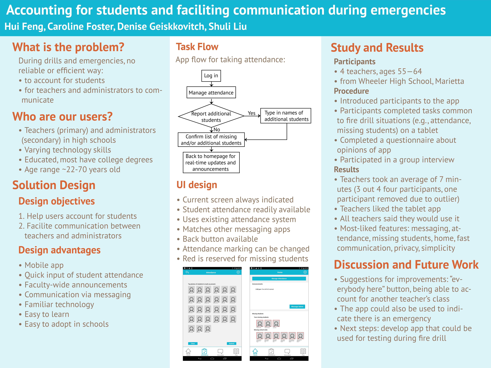

 Previous
Next
Previous
Next


 Previous
Next
Previous
Next
Summary
- Team project: In a team of four, I went through an entire user-centered design cycle from identifying a problem to testing a prototype solution.
- Problem statement: Mandatory fire drills take up crucial class time almost every month. In a real emergency, teachers and administrators need to know ASAP where all of their students are to verify they are in a safe place. This requires communication between teachers and adminstrators. Current systems either do not facilitate communication at all or they are slow and cumbersome.
- My role: development of Axure prototypes, observation of fire drill and interviews with teachers/administrators, communication with participants for evaluation, leading brainstorm sessions, problem space identification
Process: Learning
- What we did: We conducted semi-structured interviews with 10 teachers to learn about who they are, what their specific problems are, what tasks they might want to do, and what would make our system a success. We also did some market research and found guidelines and protocols for emergencies in schools. We hoped to observe a fire drill at a school, but based on scheduling, we did this later in the process.
- What we learned: There is a communication gap between teachers and administrators which likely delays the return time to classrooms. In a real emergency, this could be a safety issue.
- Actions we took: We developed usability criteria to measure the solution we would begin to design and prototype.
Analyzing the task: A task analysis identifying key things the teachers and administrators need to do. A good task analysis is system agnostic, creating the most potential for development of an entirely new solution.
Process: Design Alternatives
- Drawing board: Together, we developed design alternatives. From our brainstorm session, we decided to sketch three ideas.
Design Alternatives - Brainstorm: We spent a few hours brainstorming around potential design solutions. Our board was a little emptier than I would have liked, but I included "out-there" ideas like communication by drone and historical methods of communication, like horses and runners.
Design Alternatives - Idea 1: One idea was a mobile app. Advantages include familiar technology, relatively low-cost, and similarity to current system - an upgrade, rather than revamping something that already kind of works. Disadvantages include the need for the teachers to still bring something from the classroom. Disclaimer: I did not create this flow chart.
Design Alternatives - Idea 2: A second idea was a wearable jacket. Advantages include LEDs to guide students in a low-visibility situation and make teachers identifiable. Disadvantages include cost, unfamiliar technology, and common issues with wearables, such as customization, fit, material, etc. Disclaimer: I did not create this flow chart.
Design Alternatives - Idea 3: A third idea used Google Glass. Advantages include additional automation, such as (eventually) image recognition and elimination of carrying something. Disadvantages include cost, durability, and common issues with wearables. Disclaimer: I did not create this flow chart.
Process: More learning
- Observe: We visited a high school to observe a fire drill and speak with more teachers. During the drill, we observed the teachers, students, administrators, and took notes, especially on pain points. I was also able to speak with an administrator.
- Participatory design: We presented our sketches and wireframe mockups of our three ideas to a few teachers to get feedback. In this way, albeit briefly, were able to involve them in our design process.
Process: Prototype
- Decision-making - app: Based on feedback from teachers and a class poster session, we decided to prototype a mobile app. We made this decision due to a few reasons, such as the users’ familiarity with tech, flexibility, and cost. Phones are already used for communication, so this was a natural extension.
- Decision-making - Axure: Based on factors like time, skills within our group, and project requirements, we decided to use Axure to prototype our app. I was able to implement the necessary front-end functionality for testing without having to worry about back-end functionality.
- Functionality: When developing the prototype, we kept in mind the usability specifications we developed; for example, keeping the design simple and obvious to avoid errors and be intuitive. Front-end functionality included taking attendance, messaging an administrator, and receiving announcements.
Prototype - Hash it out: After creating the basic app flow for the design alternatives, we had a two-hour session to draw the screens in more detail before prototyping in Axure. We again identified the features we needed to include, and sketched what the attendance screens should look like.
Prototype - Marker board: This is the homescreen we initially sketched. Important decisions were the bottom navigation panel and the attendance button. Later, the announcements moved from the side to the top to optimize the app for mobile rather than desktop.
Prototype - Paper: We thought about doing paper prototypes first with index cards. Paper prototypes are typically quick and easy, and can allow someone to give feedback on structure and placement. However, we decided not to because we wanted to develop the best Axure prototype possible, which required our time.
Prototype - Axure: Our final attendance screen, showing where the students' images would be with fake names. The "Clear" button allows the teacher to easily start over, after requiring confirmation. The students are shown as "present" by their image turning to a lower opacity. Because they are present, they are no longer as important as students who have yet to be accounted for or are missing.
Prototype - Axure: The final home screen, showing announcements from administrators, one way to message admins, and the teacher's missing students as well as students missing school-wide. The bottom navigation is simple with four choices.
Prototype - Axure Edit: A quick update after the evaluation testing. The participants wanted more emphasis on missing students, so we outlined the images in red. We did not do this at first since they are all missing students, they would all be red. However, the participants wanted more emphasis. Finally, not shown here, the "Manage Attendance" button needs to be bigger, as well as the font size.
Process: Evaluation
- Decision - mock fire drill: Because of research approval limitations, we decided to conduct a mock fire drill at a public library near the school where we observed the fire drill. We were lucky to have four teachers dedicate their time during a hectic school week to evaluate the app.
- Evaluation techniques: The evaluation included benchmark tasks to complete, a short demographics survey, a questionnaire to gather individual opinions, and a group interview. We chose a questionnaire to get unbiased feedback, and a group interview as we did not know how many participants we would have or the layout of the testing space. A group interview also made sense because it was the first real evaluation, still in the early development process with plenty of room to grow and change, and the app involves tasks with a group and facilitates communication.
Conclusion
- Rewarding: At the end, it was rewarding to hear the teachers say they want to use it and the administrator ask when it would be on the market. I believe this is due to how we adhered to the user-centered design process to pinpoint problems directly from the relevant people and develop solutions.
- Lessons learned: I discovered more about what needs to be concisely explained to someone who is not directly involved in the project: specific details about users, needs, tasks, usability criteria, evaluation techniques, results, discussion, and justification for everything.
- Learn more: To learn even more about the project and process, look at the document created after prototyping but before testing.